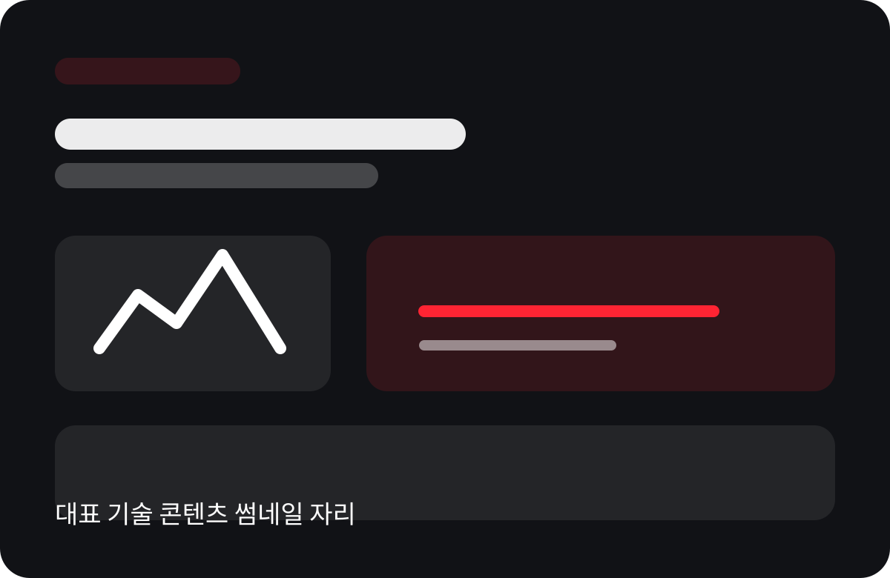

[대표 기술 콘텐츠 제목] 문제를 구조적으로 해결한 방법
허브 첫 화면에서는 단순 목록보다 “지금 가장 먼저 읽어야 할 글” 한 개를 먼저 강하게 보여주는 편이 좋습니다.
대표 콘텐츠로 첫 클릭을 만들고, 카드 그리드로 탐색을 넓히고, 뉴스레터/자료 다운로드로 리드를 회수하는 구조로 설계했습니다.

허브 첫 화면에서는 단순 목록보다 “지금 가장 먼저 읽어야 할 글” 한 개를 먼저 강하게 보여주는 편이 좋습니다.
카테고리, 제목, 한 줄 설명, 썸네일만으로도 성격이 구분되도록 구성하는 것이 중요합니다.
 기술 후기
기술 후기
연동, 권한, 적용 범위를 실무자 시선으로 정리한 글
 실사례
실사례
문제 → 적용 → 성과까지 수치 중심으로 요약
 가이드
가이드
도입 전에 꼭 확인해야 할 항목을 한 장으로 정리
 리포트
리포트
숫자로 설득해야 하는 리드에게 효과적인 유형
 기술 후기
기술 후기
비기술 이해관계자도 이해할 수 있는 구조 설명 콘텐츠
실사례
그래프와 결과 수치가 중심이 되는 케이스
가이드
바로 저장해둘 만한 문서형 자료에 적합합니다.
브랜드 전문성을 쌓는 데 좋은 상단 퍼널용 콘텐츠
 기술 후기
기술 후기
사람이 보이는 콘텐츠는 신뢰를 더 부드럽게 만듭니다.
콘텐츠를 충분히 본 뒤에야 이메일 제공에 대한 심리적 저항이 낮아집니다.
실무자가 실제로 저장해둘 만한 문서로 구성하는 편이 효율적입니다.